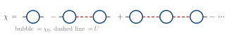
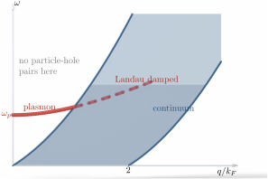

Advanced Quantum Materials 2027 · All lectures · Lecture notes
Session 9. Excitations and Defects in Quantum Materials
9.5a Interactions as a perturbation, with RPA, plasmons and the Stoner instability
So far the perturbation has been an external impurity. However, we can also treat the electron-electron interaction itself as the perturbation. We use \(\chi_0\), the non-interacting response that we just built, as input, and we ask for the response \(\chi\) of the full interacting system. For this we need two things. The first is a rule that connects \(\chi\) to \(\chi_0\), and the second is a criterion to find instabilities from \(\chi\).
From \(\chi_0\) to \(\chi\) with the random phase approximation. Let us take a contact interaction of the Hubbard type of (1.7), with strength \(U\), which couples to the density. The physical picture is a diagrammatic one. The response to a probe is the bare response \(\chi_0\), plus the bare response followed by one interaction event and another bare response. Then come two interaction events and so on, which is an infinite ladder of terms. The most efficient way to include all of them is not to sum the series term by term, but to write the self-consistent equation that the full response must satisfy,
\[\chi(q,\omega) = \chi_0(q,\omega) - \chi_0(q,\omega)\, U\, \chi(q,\omega),\]
and its algebraic solution gives the random phase approximation (RPA),
\[\chi(q,\omega) = \frac{\chi_0(q,\omega)}{1 + U\,\chi_0(q,\omega)}. \tag{9.6}\]
Equation (9.6) has a mixed character. It is derived order by order in \(U\), so it is perturbative, but since we sum the whole geometric series it becomes non-perturbative. In this way it includes physics that no finite order in \(U\) can give, which is a real pole, meaning a real phase transition. The first terms of the series are drawn in Schematic 9.7.

Two different sources of divergence. The interacting response (9.6) can diverge for two quite different reasons. It is useful to separate them, because they correspond to two different emergent quasiparticles.
From \(\chi_0\) itself, as in Section 9.4. This is an electron-hole excitation, which is a single-particle process that moves one electron from an occupied state to an empty state.
From the RPA denominator, \(1+U\chi_0=0\), which is a new collective phenomenon that comes from the interaction. For a long-range Coulomb interaction, \(U \to v(q)\), which depends strongly on \(q\) and diverges as \(q\to0\). The pole of (9.6) as a function of \(\omega\) at fixed \(q\) then defines a new quasiparticle, the plasmon, which is a collective charge oscillation of the whole electron gas. Its dispersion depends on the screening and on the dimensionality of the system. In the standard RPA treatment of the three-dimensional electron gas, which is the Bohm-Pines treatment, at long wavelength the dispersion has the form
\[\omega_{\rm pl}(q)^2 = \omega_p^2 + \tfrac{3}{5} v_F^2\, q^2 + O(q^4), \tag{9.7}\]
where \(\omega_p\) is the classical plasma frequency. The plasmon exists even at \(q=0\), which is different from the particle-hole continuum, because it is a collective mode of the whole charge density and not a single-particle excitation. Figure 9.2 shows both kinds of divergence in the same \((q,\omega)\) plane, and it shows explicitly the window at small \(q\) where the pole exists and no single-particle excitation exists.

In the density channel the interaction is repulsive, \(U>0\), and \(\chi_0\) is positive. How does the RPA response (9.6) compare with \(\chi_0\) at the same \(q\) and \(\omega\)?
Show the answers
- A. ✓ True
This is true. For \(U=t\) and \(\chi_0=0.68/t\) we get \(\chi=0.68/1.68=0.40\) in units of \(1/t\), which is smaller than \(\chi_0\). The repulsion opposes the induced density, which is screening. In the spin channel the sign is opposite.
- B. ✗ False
This is false. For \(U=t\) and \(\chi_0=0.68/t\) the RPA response is \(0.68/1.68=0.40\). This is smaller, since a repulsive \(U\) enhances only the spin channel and not the density one.
- C. ✗ False
This is false. The denominator \(1+U\chi_0\) is \(1.68\) for \(U=t\) and \(\chi_0=0.68/t\), so the response changes by this factor. The poles are shifted too, but the weight at fixed \(q\) and \(\omega\) changes as well.
At small \(q\) the particle-hole continuum of Figure 9.2 shrinks towards \(\omega=0\), while the plasmon of (9.7) stays near \(\omega_p\). Why is the plasmon not damped there?
Show the answers
- A. ✗ False
This is false. For the Coulomb interaction \(v(q)\propto1/q^2\) diverges at \(q\to0\). The interaction is not zero there, and its divergence is what puts the plasmon at the finite \(\omega_p\).
- B. ✓ True
This is true. Landau damping needs a pair with the same \(q\) and \(\omega\). At small \(q\) the continuum is at low \(\omega\) and the plasmon is at \(\omega_p\), so no pair exists and the mode is sharp.
- C. ✗ False
This is false. The plasmon is a collective mode of all electrons. The same mode does decay when its branch enters the continuum at larger \(q\), which shows that it is not protected as a single particle.
The same denominator, now in the spin channel, gives the Stoner instability, and we treat it next.